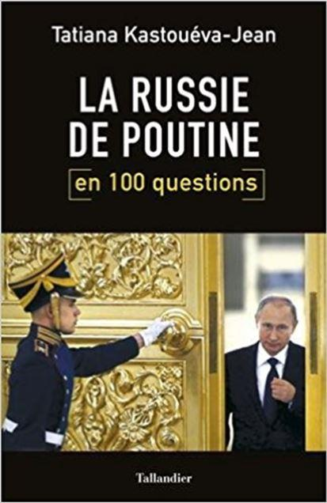
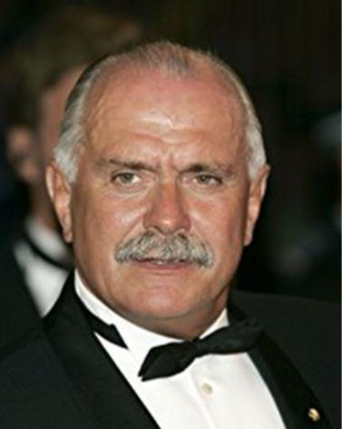
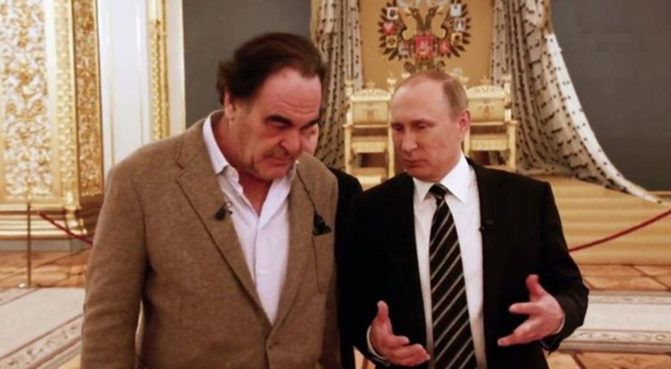
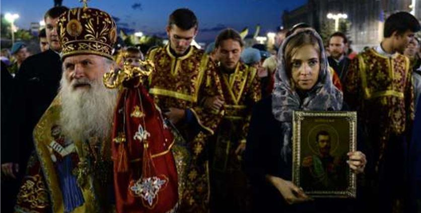

Tatiana Kastouéva-Jean1, spécialiste des politiques intérieure et étrangère russes, à la direction du Centre Russie/NEI de l'Ifri, a publié, en tout début d’année aux Éditions Tallandier, un ouvrage intitulé « La Russie de Poutine en 100 questions ».
Dans un style clair et didactique, l'experte a souhaité donner cent clés pour mieux saisir la genèse et l'évolution du régime Poutine et les dynamiques de la société russe. Néanmoins j'ai voulu apporter sur cet ouvrage mes propres notes entre [ndla] qui s'opposent à Tatiana Kastouéva-Jean qui semble parfois osciller entre réalisme de la situation et raccourcis assez surprenants sur certaines autres vérités qu'elle occulte. Ceci afin que chacun puisse se faire un avis neutre sur la question.
« La Grande Révolution d’Octobre et l’arrivée au pouvoir des bolcheviks en 1917, menés par Vladimir Lénine, a mis fin au règne de la dynastie Romanov, la lignée des tsars au pouvoir depuis le XVIIème siècle. Le destin du dernier tsar Nicolas II a été tragique : après avoir renoncé au trône, il a été exécuté avec sa famille et quelques proches à Ekaterinbourg, en 1918. Les manuels d’histoire soviétique présentaient le tsar comme responsable de la misère dans laquelle était plongé le pays et des répressions contre le peuple, tout en décrivant la monarchie comme un régime politique archaïque et injuste.
C’est seulement après la chute de l’URSS que Nicolas II et sa famille ont été réhabilités et même canonisés par l’Eglise orthodoxe russe (2000). Leurs restes reposent désormais dans la cathédrale Saint-Pierre-et-Paul- nécropole impériale russe- à Saint-Pétersbourg. Dans les années 1990, plusieurs œuvres littéraires et cinématographiques véhiculaient une image idéalisée de la Russie tsariste. Moyen de clore la parenthèse communiste, cette réhabilitation contribuait aussi à la construction de la nouvelle identité postsoviétique. Quelques appels au retour des descendants Romanov, exilés à Paris, n’ont pourtant pas trouvé beaucoup d‘écho, ni dans les élites, ni dans la population. En 2013, le 400ème anniversaire de la maison Romanov a été célébré sans grande pompe par une exposition et le retour d’un obélisque-enlevé 100 ans auparavant- dans le jardin Alexandre jouxtant le Kremlin.
L’idée de rétablissement d’une monarchie en Russie est populaire dans certains milieux politiques ou artistiques. Certains, comme le célèbre cinéaste Nikita Mikhalkov ou la députée Natalia Poklonskaya sont connus pour leur vision monarchiste. Poklonskaya est allée jusqu’à initier en 2017 un procès pour diffamation contre le metteur en scène d’un film (Mathilda, 2017) qui met en lumière la liaison amoureuse du jeune prince, futur Nicolas II, avec une ballerine polonaise [en octobre dernier, un récent sondage (VTsIOM), affirmait que seuls 17 % des russes souhaitaient son interdiction et soutenaient l'initiative de la pasionaria et député Natalia Poklonskya- ndlr]. Ce film a donné un nouveau souffle à plusieurs courants radicaux orthodoxes, notamment celui de « Tsar Dieu « [Dans le cadre de l'enquête déclenchée le 20 septembre,suite à l'incendie des studios de production du film » Mathilda », Aleksandr Kalinin, leader du mouvement monarchiste ultra-orthodoxe « Etat Chrétien-Sainte Russie », a été arrêté et condamné à un mois de prison ferme, reconnu coupable d'avoir organisé un attentat aux cocktails molotov notamment contre les bureaux de l'avocat qui défend les droits du producteur Alexei Uchitel.]
Certains députés et hommes politiques se sont exprimés en faveur d’une restauration d’une forme de monarchie en Russie [citons par exemple : le président de la Crimée Sergei Aksyonov, le député Vladimir Volfovitch Jirinovski, le chef du Département des relations ecclésiastiques extérieures (DREE) du Patriarcat de Moscou, le Metropolite Hilarion Volokolamsky, l’archiprêtre Vsevolod Chaplin, ancien responsable du Synode orthodoxe ou encore le premier conseiller présidentiel Vladimir Petrov] depuis l’annexion de la Crimée qui a provoqué une consolidation de l’électorat autour de la figure de Vladimir Poutine, perçu comme protecteur des intérêts de la nation.
Les présidents Sergei Aksyonov et Vladimir Poutine
Au-delà de la banale flatterie à l’égard du chef du Kremlin2, leurs arguments portent sur une manière de renforcer l’identité nationale, de consolider la société au-delà des appartenances confessionnelles et ethniques, de combler l’écart qui se creuse entre les autorités et le peuple. Cependant ce discours reste marginal autant au sein des élites que de la population. Le porte-parole de Poutine a du même expliquer publiquement que le Kremlin accueille ces idées sans enthousiasme [le Président Vladimir Poutine a en effet réfuté toute idée actuelle d'un éventuel retour d'un Tsar sur un trône, dans son dernier entretien accordé au producteur américain Oliver Stone (« Conversations avec monsieur Poutine »). Si celle-ci a bien été évoquée au Kremlin et des négociations restent en cours avec la famille impériale sur un éventuel statut officiel. Si le porte-parole du Président russe, Dimitri Peskov, a également balayé tout argument en sa faveur lors d'une interview donnée à RTBH en mars 2017, il a aussi reconnu toutefois que Vladimir Poutine avait abordé une réflexion sur le thème de la restauration avec « calme et sérénité. »]
Quant à l’opinion publique, même si les Russes sont attachés à un Etat paternaliste et aux grands symboles nationaux, la monarchie et la transmission du pouvoir par l’héritage sont loin d’être leur souhait. Début 2017 (selon un sondage du centre Levada – un des 3 grands centres de sondages russes), moins de 10 % voient la monarchie comme un modèle souhaitable pour la Russie[L'auteur fait volontairement un raccourci- Ainsi selon un sondage sur les perspectives de restauration de la monarchie organisé par Levada et publié en mars 2017 dans le « Japan Times », un quart des Russes avait une opinion positive du tsar Nicolas II et 20 % souhaiteraient le retour de la monarchie dans le pays avec un Romanov sa tête En décembre dernier, le Président Vladimir Poutine avait appelé publiquement les russes à se réconcilier avec leur histoire pour les festivités du centenaire de la révolution de Février et d'Octobre. 33 % des russes sont néanmoins convaincus que la chute du régime impérial a été provoquée par les services secrets étrangers lors de la première guerre mondiale et 15 % que seul le Tsar Nicolas II fut responsable des événements qui ont conduit à son abdication.
Un autre sondage réalisé le 16-17 mars par le Centre de recherche sur l'opinion publique russe (VTsIOM) a été publié par le journal « La Pravda » concernant la question de l'éventualité d'un retour du monarchisme en Russie alors que le pays célèbre le centenaire de la révolution de Février et Octobre.
Sur les 1800 personnes interrogées, ce sondage montre que 68 % des russes seraient opposés au retour de la monarchie préférant de loin conserver la république actuelle.
Seuls 22 % des russes souhaitent aujourd'hui le retour d'un Tsar mais ne peuvent dire quel prétendant est le mieux placé pour monter sur le trône. Les jeunes âgés de 18 à 34 ans sont ceux qui plébiscitent le plus un retour à la monarchie avec 33 % d'opinions favorables. Pour 8 % des personnes interrogées, le système monarchique fait partie des traditions russes et un autre 8 % pense que ce serait la meilleure forme de gouvernement pour la Russie en matière de stabilité politique.
Si le caractère héréditaire de la monarchie est majoritaire chez les partisans de la monarchie, 6 % d'entre eux pensent néanmoins que l'Empereur pourrait être élu.
Enfin dans un autre sondage organisé par Izvestia, 22 % des russes affirmaient également soutenir le retour de la monarchie (sans autant pouvoir désigner clairement le nom d'un candidat au trône), parmi eux 37 % de la jeunesse russe se disant favorable à cette idée, et en dépit de divers soutiens publics de députés de la Douma et autres autorités religieuses.
A comparer au sondage réalisé en 2013 pour le 400ème anniversaire de la dynastie impériale, qui montrait qu'1/3 des russes souhaitaient la restauration de la monarchie. Ce sont donc des chiffres qui sont en baisse avec une différence de 2 % de plus en faveur du maintien de la république. A noter également que 10 % des russes qui sont en faveur du retour d'un Tsar, ne sont pas en mesure d'expliquer les raisons pour lesquelles ils souhaiteraient voir la monarchie en Russie.]
Finalement les Russes semblent davantage nostalgiques de la période soviétique que de l’époque du Tsar [« Le 3 novembre 2017, le journal britannique « L'Indépendant » consacrait un article complet sur le monarchisme en Russie, qui selon lui se situait entre Disneyland, fantasmes et culte véritable au tsarisme. Revenant sur le meurtre de la famille royale, le reportage pointait du doigt ces ultra-orthodoxes qui fantasment « l'image d'un empereur pacifique qui s'est sacrifié pour la nation » mais notait que le monarchisme russe n'a cessé de croître depuis la chute du communisme. Radio Free Europe s'est fait l'écho d'une manifestation qui a rassemblé plus de 60000 personnes le 17 juillet dernier afin de commémorer le dernier tsar de Russie et sa famille exécutés par les bolcheviques. »]
La suite est à découvrir dans le livre.
F. de N.
Notes :
1. Diplômée de l'Université d'État de Ekaterinbourg, du Master franco-russe en relations internationales Sciences-Po/Mgimo à Moscou d'un DEA de relations internationales à l'université de Marne-la-Vallée, Tatiana Kastouéva-Jean dirige également la collection électronique trilingue Russie.Nei.Visions.
2. Selon Le Monde de Mars dernier : « Vladimir Poutine s’inspire autant de la période tsariste que de la période soviétique, dont il est issu. Il s’affiche dans les monastères sans déchirer son ancienne carte du Parti communiste, comme il l’a lui-même précisé. Il a inauguré l’an passé une série de grandes expositions sur l’histoire de la Russie, depuis la première dynastie impériale des Riourikides, mais refuse d’enterrer Lénine. Il critique ce dernier pour avoir détruit l’empire mais épargne Staline, qui l’a rétabli. Depuis dix-sept ans, le chef du Kremlin a bâti son pouvoir non sur la réconciliation des « blancs » et des « rouges », mais sur la restauration d’un empire, et ce qu’il déteste par-dessus tout, c’est l’évocation... »
Partager cette page